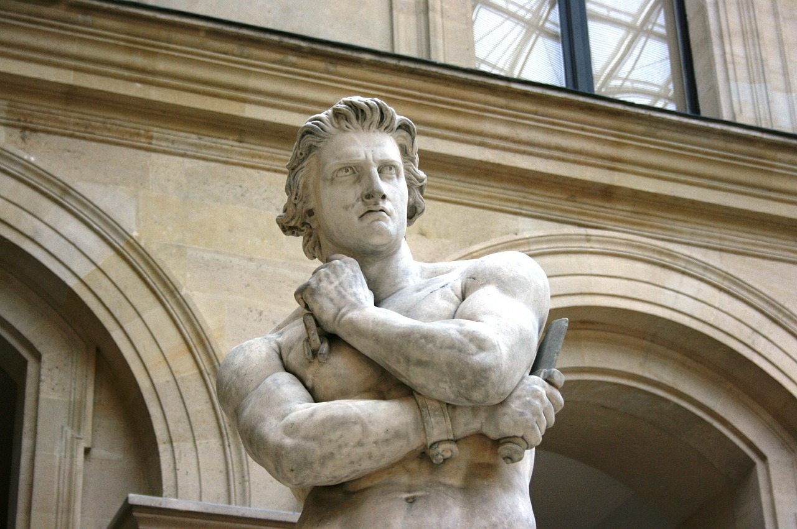

Spartacus
a former gladiator and an military leader
Here's a time line of Spartacus's life:
- c111-71 BC -Appian says he was "a Thracian by birth
- 71 BC - Plutarch, Appian and Florus all claim that Spartacus died during the battle, but Appian also reports that his body was never found.
"This rebellion, interpreted by some as an example of oppressed people fighting for their freedom against a slave-owning oligarchy, has provided inspiration for many political thinkers, and has been featured in literature, television, and film.[1] Although this interpretation is not specifically contradicted by classical historians, no historical account mentions that the goal was to end slavery in the Republic"
-- Spartacus proved to be an excellent tactician